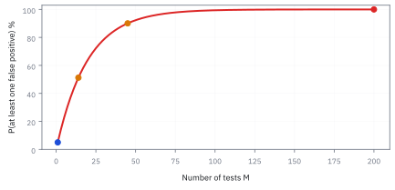
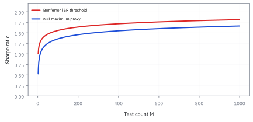
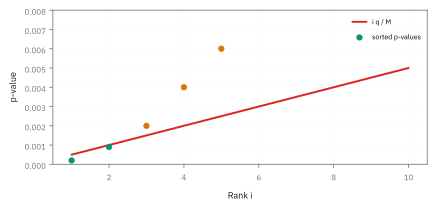

3.6 The Multiple Testing Problem
นับทุกแบบที่เคยลอง ก่อนเชื่อผู้ชนะ
ทีมวิจัยลอง 200 กลยุทธ์ด้วยข้อมูล 5 ปี สมมติว่าไม่มีกลยุทธ์ไหนมี edge เลยสักตัว ใช้เกณฑ์ 5% ตามหัวข้อ 3.5 คาดว่าจะมีกี่ตัวผ่าน และตัวที่ดีที่สุดจะโชว์ Sharpe เท่าไร?
เฉลย: ผ่านราว 10 ตัว โอกาสมีอย่างน้อยหนึ่งตัวผ่านคือ 99.9965% และตัวที่ดีที่สุดโชว์ Sharpe ราว 1.46 ทั้งที่ไม่มีอะไรเลย ถ้าจะให้ทั้งชุดพลาดไม่เกิน 5% ต้องตั้งเกณฑ์ใหม่ที่ Sharpe 1.638
p-value ของกลยุทธ์ตัวเดียวไม่รู้ว่าเราลองมาแล้วกี่แบบ หัวข้อนี้นับต้นทุนของการเลือกผู้ชนะ และวิธีคุมมัน
เริ่มจากกลยุทธ์ที่ชนะ ทั้งที่ไม่มีกลยุทธ์ไหนดีเลย
ทีมวิจัยลองกลยุทธ์ 200 แบบด้วยข้อมูล 5 ปี แล้วเอาตัวที่ผ่านเกณฑ์ 5% ของหัวข้อ 3.5 มาเสนอ สมมติสุดขั้วว่าไม่มีกลยุทธ์ไหนมี edge เลยสักตัว
ถึงอย่างนั้นก็ยังจะมีราว 10 ตัวผ่าน เพราะเกณฑ์ 5% แปลว่ายอมให้ของเปล่าผ่านได้ 5 ตัวในร้อย ลอง 200 แบบก็ได้ 10 ตัวโดยไม่ต้องมีอะไรจริงเลย
ปัญหาที่แท้จริงคือ p-value ของตัวที่ชนะไม่รู้ว่ามันถูกคัดมาจากกี่ตัว มันตอบเหมือนกันหมดไม่ว่าเราจะลองมาแล้วหนึ่งครั้งหรือสองร้อยครั้ง หัวข้อนี้นับต้นทุนของการเลือกผู้ชนะออกมาเป็นตัวเลข แล้วตั้งเกณฑ์ใหม่ที่คุมมันได้
ศัพท์ที่ใช้ในหัวข้อนี้
- multiple testing
- การทดสอบหลายสมมติฐานแล้วตีความผู้ชนะด้วยเกณฑ์ของการทดสอบเดียว ใช้เรียกความเบี้ยวที่มาจากการลอง parameter กลุ่มหุ้น หรือวิธีคำนวณหลายแบบ
- false positive
- กลยุทธ์ที่ผ่านเกณฑ์ทั้งที่ไม่มี edge จริง ใช้นับว่ารายชื่อผู้ชนะมีของปลอมเท่าไร
- family-wise error rate (FWER)
- โอกาสที่จะมีของปลอมผ่านอย่างน้อยหนึ่งตัวในทั้งชุด ใช้คุมเมื่อของปลอมตัวเดียวมีต้นทุนสูงมาก
- false discovery rate (FDR)
- สัดส่วนเฉลี่ยของของปลอมในกลุ่มที่ประกาศว่าผ่าน ใช้คัดผู้สมัครจำนวนมากไปทดลองต่อ โดยยอมให้มีของปลอมปนในงบที่ประกาศ
- Bonferroni correction
- การแบ่งงบความผิดพลาดของทั้งชุดเท่า ๆ กันให้ทุกการทดสอบ คือใช้ α หาร M ใช้คุม FWER โดยไม่ต้องสมมติว่าการทดสอบไม่เกี่ยวกัน
- Benjamini–Hochberg procedure
- การเรียง p-value จากน้อยไปมาก แล้วเทียบกับเส้นเกณฑ์ที่ลาดขึ้นตามลำดับ ใช้คุม FDR ในการคัดสัญญาณจำนวนมาก
- data snooping
- การให้ผลจากข้อมูลชุดเดิมชี้นำการเลือกแบบจำลองซ้ำ ๆ แล้วทดสอบเหมือนไม่เคยเลือก ใช้เรียกหลักฐานที่ถูกใช้ไปแล้ว
- survivorship bias
- ความเบี้ยวจากการที่ข้อมูลเหลือแต่ผู้ที่รอด เพราะผู้แพ้ถูกคัดออกไปก่อนเราจะเห็น ใช้อธิบายว่าทำไมประวัติของกองทุนที่เหลืออยู่ดูดีเกินจริง
- holdout
- ข้อมูลช่วงที่กันไว้ไม่ให้แตะระหว่างวิจัย ใช้ยืนยันผู้ชนะครั้งสุดท้ายโดยไม่ปนการเลือก
- union bound
- ข้อเท็จจริงว่าโอกาสที่เหตุการณ์อย่างน้อยหนึ่งอย่างเกิด ไม่เกินผลบวกของโอกาสแต่ละอย่าง ใช้พิสูจน์ Bonferroni
- Sharpe ratio (SR)
- ผลตอบแทนส่วนเกินเฉลี่ยหารความผันผวน (หัวข้อ 3.5) ใช้เป็นตัวเลขที่ผู้ชนะปลอมอวด
สัญลักษณ์ที่ใช้ในหัวข้อนี้
| สัญลักษณ์ | ความหมาย | หน่วย |
|---|---|---|
| $M$ | จำนวนกลยุทธ์ที่ทดสอบทั้งหมด รวมตัวที่ทิ้งไปแล้ว | ตัว |
| $\alpha$ | เกณฑ์ต่อการทดสอบ หรืองบความผิดพลาดของทั้งชุด ตามที่ระบุ | ไม่มีหน่วย |
| $\alpha^*$ | เกณฑ์ต่อการทดสอบหลังแบ่งงบแบบ Bonferroni | ไม่มีหน่วย |
| $I_i$ | ตัวนับ เท่ากับ 1 ถ้าการทดสอบที่ $i$ ผ่านโดยบังเอิญ นอกนั้นเป็น 0 | ไม่มีหน่วย |
| $V$, $R$ | จำนวนของปลอมที่ผ่าน และจำนวนที่ผ่านทั้งหมด | ตัว |
| $p_{(i)}$ | p-value ตัวที่ $i$ หลังเรียงจากน้อยไปมาก | ไม่มีหน่วย |
| $q$ | งบ FDR ที่ยอมรับ | ไม่มีหน่วย |
| $T$ | จำนวนปีของข้อมูล | ปี |
| $z$ | จุดตัดบนระฆังมาตรฐาน | ไม่มีหน่วย |
ขั้นที่ 1 — จดหมายทำนายฟุตบอล: สร้างผู้ชนะด้วยมือ
ส่งจดหมาย 10,000 ฉบับ สัปดาห์แรกบอกครึ่งหนึ่งว่าทีมหนึ่งชนะ อีกครึ่งบอกอีกทีม เก็บไว้เฉพาะคนที่ได้คำทายถูก ทำสิบสัปดาห์ ค่าส่งฉบับละ \$0.75 และขายคำทายครั้งที่ 11 คนละ \$10,000
ราวสิบคนเห็นคำทายถูกสิบครั้งติด โดยผู้ส่งไม่รู้เรื่องฟุตบอลเลย จำนวนฉบับลดครึ่งทุกสัปดาห์ รวมราวสองหมื่นฉบับ กลุ่มผู้รอดไม่ได้ถูกคัดด้วยฝีมือ แต่ถูกคัดด้วยการรู้ผลก่อน track record ของกลุ่มที่ถูกคัดแล้วจึงไม่มีข้อมูลเรื่องความสามารถเลย
ขั้นที่ 2 — ผลเดียวกันโดยไม่มีใครโกง: ผู้จัดการที่แพ้ถูกไล่ออก
ถ้าทุกปีผู้จัดการที่แพ้ตลาดถูกไล่ออก และแต่ละคนชนะตลาดด้วยโอกาสครึ่งหนึ่งโดยไม่มีฝีมือ ข้อมูลที่เหลือในปีที่สิบจะเหลือแต่คนที่ชนะรวด
ตัวเลขเดียวกับจดหมายเป๊ะ ต่างแค่เจตนา ไม่มีใครโกง แต่ฐานข้อมูลถูกคัดมาแล้วด้วยกฎการจ้างงานเอง นี่คือ survivorship bias ก่อนเชื่อผลงานของกองทุนที่รอด ให้ถามว่ากลุ่มตั้งต้นมีกี่แห่ง และกี่แห่งหายไปจากข้อมูล
ขั้นที่ 3 — ของปลอมที่คาดว่าจะผ่าน และโอกาสเจออย่างน้อยหนึ่งตัว
นับของปลอมด้วยตัวนับทีละการทดสอบ ค่าเฉลี่ยของผลรวมคือผลรวมของค่าเฉลี่ย (หัวข้อ 1.3) ข้อนี้จริงเสมอ ส่วนโอกาสไม่เจอเลยต้องคูณโอกาสของทุกการทดสอบ ซึ่งต้องสมมติว่าไม่เกี่ยวกัน
จำนวนที่คาดว่าจะผ่านโดยบังเอิญคือสิบตัว ไม่ว่าการทดสอบจะเกี่ยวกันแค่ไหน ส่วนโอกาสที่จะไม่เจอของปลอมเลยแทบเป็นศูนย์ ถ้าไม่เจออะไรเลยต่างหากที่แปลก
ขั้นที่ 4 — แค่ 14 การทดสอบก็เกินครึ่งแล้ว
แก้หาจำนวนการทดสอบที่ทำให้โอกาสเจอของปลอมอย่างน้อยหนึ่งตัวเกิน 50% และ 90%
ใส่ log ทั้งสองข้าง ln 0.95 ติดลบ จึงกลับทิศของอสมการตอนหาร ลองแค่ 14 แบบ โอกาสเจอผู้ชนะปลอมก็เกินครึ่ง ไม่ต้องรอให้ลองเป็นพัน นี่คือขนาดของปัญหา
ภาพ 3.6a — 5% ต่อครั้งกลายเป็นเกือบแน่นอนเมื่อสะสม

เส้นแสดงโอกาสเจอของปลอมอย่างน้อยหนึ่งตัวเมื่อการทดสอบไม่เกี่ยวกัน ที่ 14 การทดสอบเกิน 50% ที่ 45 เกิน 90% และที่ 200 เป็น 99.9965%
ขั้นที่ 5 — Sharpe ของผู้ชนะปลอม: ราว 1.46 ที่ 5 ปี
ในบรรดา M ค่าจากระฆังมาตรฐาน ค่าที่มากที่สุดมักอยู่ราวจุดที่หางขวาเหลือโอกาสหนึ่งใน M หางของระฆังลดราว $e^{-z^2/2}$ จึงแก้หาจุดนั้นได้ แล้วแปลงเป็น Sharpe ด้วย t = SR × √T
ถ้าลอง 200 แบบที่ไม่มีอะไรเลย ตัวที่ดีที่สุดคาดว่าจะโชว์ Sharpe ราว 1.46 ในข้อมูล 5 ปี Sharpe ระดับนี้คือของฟรีที่ความบังเอิญแจกให้ backtest ที่ได้ 1.40 จึงอาจต่ำกว่ารางวัลที่ noise ให้เปล่า ๆ ด้วยซ้ำ
ภาพ 3.6d — เวลายาวลด baseline ของผู้ชนะปลอม

ที่ 200 แบบ Sharpe ของผู้ชนะปลอมลดตามหนึ่งส่วนรากของจำนวนปี จาก 1.456 ที่ห้าปีเป็น 0.728 ที่ยี่สิบปี การลดจำนวนที่ลองช่วยได้ แต่ข้อมูลที่ยาวและไม่เคยถูกแตะช่วยได้แรงกว่า
ขั้นที่ 6 — Bonferroni: แบ่งงบความผิดพลาดให้ทุกการทดสอบ
ต้องการคุมโอกาสที่มีของปลอมผ่านอย่างน้อยหนึ่งตัว ใช้ union bound ซึ่งจริงเสมอแม้การทดสอบเกี่ยวกัน แล้วบังคับให้ผลรวมไม่เกินงบ
ผลบวกนับส่วนที่ทับซ้อนซ้ำ จึงไม่น้อยกว่าโอกาสจริง ต่างจากการคูณโอกาสในขั้นที่ 3 ที่ต้องสมมติว่าไม่เกี่ยวกัน สองร้อยแบบทำให้ต้องมี Sharpe เกิน 1.638 ในห้าปีถึงจะผ่าน สูงกว่าผู้ชนะปลอม 1.456 พอดี ๆ และโอกาสพลาดของทั้งชุดเหลือ 4.88%
ภาพ 3.6b — threshold Sharpe ต้องสูงขึ้นเมื่อ search กว้าง

เส้นแดงคือเกณฑ์ Bonferroni สองหางที่ 5 ปี เส้นน้ำเงินคือ Sharpe ของผู้ชนะปลอมราวรากของ 2 ln M หาร T ทั้งคู่โตช้ากว่า M มาก แต่ไม่เป็นศูนย์ การไม่จดจำนวนที่ลองคือการตั้งมาตรฐานต่ำแบบมองไม่เห็น
ขั้นที่ 7 — นิยามของ Benjamini–Hochberg: เส้นเกณฑ์ที่ลาดขึ้น
นิยามของวิธี: เรียง p-value จากน้อยไปมาก หาตัวสุดท้ายที่ยังอยู่ใต้เส้นที่ลาดขึ้น แล้วเก็บทุกตัวตั้งแต่ตัวแรกถึงตัวนั้น ลองกับรายการ p-value สี่ตัวแรกของ 200 แบบ ที่ q = 10%
ตัวที่ต้องหาคือลำดับที่มากที่สุดที่ p-value ยังไม่เกินเส้น ที่นี่คือลำดับที่ 2 จึงเก็บ R = 2 ตัวแรก ผลที่ Benjamini และ Hochberg พิสูจน์คือ ค่าเฉลี่ยของสัดส่วนของปลอมในกลุ่มที่เก็บไม่เกิน q เมื่อการทดสอบไม่เกี่ยวกันหรือเกี่ยวกันในทางบวก
ขั้นที่ 8 — Bonferroni กับ Benjamini–Hochberg บนรายการเดียวกัน
ใช้ p-value ชุดเดียวกับขั้นที่ 7 เทียบว่าแต่ละวิธีเก็บกี่ตัว
Bonferroni ใช้เส้นแบนที่ต่ำที่สุดตลอด จึงเก็บตัวเดียว Benjamini–Hochberg ใช้เส้นที่ลาดขึ้น จึงผ่อนกว่า เก็บสองตัว แต่ยังคุมสัดส่วนของปลอม เหมาะกับการคัดผู้สมัครไปทดลองต่อ ส่วน Bonferroni เหมาะกับการตัดสินใช้เงินจริง
ภาพ 3.6c — Benjamini-Hochberg เก็บได้เท่าที่เส้นอนุญาต

ที่ M = 200 และ q = 10% p-value สี่ตัวแรกคือ 0.0002, 0.0009, 0.0020 และ 0.0040 สองตัวแรกอยู่ใต้เส้น ตัวที่สามข้ามเส้น จึงเก็บแค่สองตัวไป paper trading แทนการประกาศว่าทั้งสี่เป็นการค้นพบ
ขั้นที่ 9 — p-value เล็กไม่ได้แปลว่าผู้ผ่านส่วนใหญ่เป็นของจริง
นับ 1,000 ไอเดีย สมมติมีของจริง 2% การทดสอบมี power 50% และเกณฑ์ 5%
ผู้ผ่าน 59 ไอเดียมีของจริงแค่ราว 17% ทั้งที่แต่ละตัวผ่านเกณฑ์ 5% p-value ตอบว่าถ้า null จริง โอกาสเห็นผลแบบนี้เท่าไร ไม่ได้ตอบว่าผู้ผ่านมีโอกาสเป็นของจริงเท่าไร คำตอบหลังขึ้นกับว่าไอเดียจริงมีมากแค่ไหนตั้งแต่ต้น
คำตอบ ตรวจเอง และแปลว่าอะไร
โจทย์ให้อะไรมาบ้าง: 200 กลยุทธ์ ข้อมูล 5 ปี เกณฑ์ 5% null คือไม่มี edge ทุกตัว
คำตอบ: (ก) คาดว่าของปลอมผ่าน 10 ตัว โอกาสเจออย่างน้อยหนึ่งตัว 99.9965% (ข) Bonferroni ให้เกณฑ์ต่อตัว 0.00025 ตัวคูณ 3.6623 ต้องมี Sharpe 1.638 (ค) ผู้ชนะปลอมคาดว่าโชว์ Sharpe 1.456 (ง) Benjamini–Hochberg ที่ q = 10% เก็บได้ 2 ตัวจากรายการตัวอย่าง Bonferroni เก็บได้ 1 ตัว
ตรวจเองใน 10 วินาที: 200 × 0.05 = 10 และ 0.05/200 = 0.00025
แปลว่าอะไร: เวลามีคนเสนอ backtest คำถามแรกไม่ใช่ Sharpe เท่าไร แต่คือลองมาแล้วกี่แบบ ถือผู้ผ่านเป็นผู้สมัครไป holdout หรือ paper trading ไม่ใช่ alpha ที่ใช้เงินจริงได้
บันทึกการวิจัยที่ต้องมีก่อนกราฟของผู้ชนะ
| ขั้น | ต้องบันทึก | การคุม |
|---|---|---|
| ไอเดีย | กลไกทางเศรษฐกิจ และ null ที่ตั้งไว้ล่วงหน้า | ปฏิเสธเรื่องเล่าที่แต่งหลังเห็นผล |
| การค้นหา | กลุ่มหุ้น วิธีแปลงสัญญาณ parameter และการรันซ้ำ | นับ M หรือจัดเป็นลำดับชั้น |
| การเลือก | ตัวชี้วัด ต้นทุน กฎตัดสินเมื่อเสมอ | ล็อกเวอร์ชันของโค้ดและข้อมูล |
| การยืนยัน | holdout ที่ไม่เคยแตะ paper trading ขนาดเงินที่รับได้ | ห้ามปรับจูนบน holdout |
| การใช้งานจริง | กฎ FWER หรือ FDR และเพดานความเสี่ยง | เริ่มขนาดเล็ก พร้อมเกณฑ์หยุด |
ถ้าบันทึกหาย อย่าตั้ง M = 1 เพียงเพราะจำไม่ได้ ใช้ค่าประมาณที่ระมัดระวัง และขอให้ทีมอื่นทำซ้ำ
ตัวอย่างที่สอง — ผู้จัดการที่รอดสิบปี
โจทย์ให้อะไรมาบ้าง: ผู้จัดการตั้งต้น 10,000 คน แต่ละปีชนะตลาดครึ่งต่อครึ่งโดยไม่มีฝีมือ แพ้แล้วถูกไล่ออก
คำตอบ: หลังสิบปีเหลือราว 10 คน ทุกคนมีประวัติชนะสิบปีติด ประวัตินี้ไม่มีข้อมูลเรื่องฝีมือเลย
ตรวจเองใน 10 วินาที: 10,000 หาร 1,024 ได้ราว 9.77
แปลว่าอะไร: ก่อนซื้อผลงานในอดีต ให้ถามขนาดของกลุ่มตั้งต้นและจำนวนที่หายไป สองตัวเลขนั้นบอกว่าผลงานที่เห็นมาจากฝีมือหรือจากการคัดเลือก
กับดัก: นับเฉพาะแถวในรายงาน ไม่นับการตัดสินใจนอกโค้ด
การทดสอบที่คล้ายกันทำให้จำนวนการลองที่เป็นอิสระจริงต่ำกว่าจำนวนดิบ Bonferroni จึงเข้มเกินไปบ้าง แต่การตัดสินใจของนักวิจัยนอกโค้ด เช่นการเปลี่ยนกลุ่มหุ้นหลังเห็นกราฟ ทำให้จำนวนทางเลือกจริงสูงกว่าที่บันทึกไว้มาก ทางออกคือเก็บบันทึกการทดลองแบบมีเวอร์ชัน ล็อก holdout แล้วค่อย paper trading ทีมที่ฆ่าของปลอมได้เร็วกำลังประหยัดเงิน ไม่ได้ทำวิจัยล้มเหลว
ที่มาที่ไป: ถ้าลองมากพอ ยังไงก็ต้องเจอสักตัว
ปัญหานี้ใหญ่ที่สุดในงานวิจัยกลยุทธ์ และเป็นเหตุผลหลักที่ผลวิจัยจำนวนมากซ้ำไม่ได้ ปี 1936 Carlo Emilio Bonferroni เสนออสมการที่กลายเป็นวิธีแบ่งงบความผิดพลาดให้ทุกการทดสอบ ได้ผลแต่เข้มมากจนทิ้งของดีไปด้วย
ปี 1995 Yoav Benjamini กับ Yosef Hochberg เสนอทางที่ผ่อนกว่า ยอมให้มีของปลอมปนได้ แต่คุมสัดส่วนของมัน ซึ่งใช้ได้จริงกว่าเมื่อทดสอบเป็นร้อย จำนวนการทดสอบไม่ได้หมายถึงแค่แถวในรายงาน 20 ช่วงเวลาย้อนหลัง 5 วันปรับพอร์ต และ 4 กฎออก สร้างได้ 400 แบบแล้ว
ข้อจำกัด: วิธีนี้สมมติอะไร และของจริงเป็นอย่างไร
| เรื่อง | วิธีนี้สมมติว่า | ของจริงเป็นอย่างไร | ผลที่ตามมาเวลาใช้งาน |
|---|---|---|---|
| การนับจำนวนที่ลอง | รู้ว่าลองไปกี่แบบ | คนลืมนับแบบที่ลองแล้วทิ้งตั้งแต่ต้น | การปรับที่ทำจึงยังไม่พอ และผลยังดูดีเกินจริงอยู่ |
| independence ของการทดสอบ | แต่ละการทดสอบเป็นอิสระ | กลยุทธ์ที่ลองมักคล้ายกัน | การปรับแบบเข้มที่สุดจะเข้มเกินไปจนทิ้งของดีไป |
| การแลกกัน | ยิ่งเข้มยิ่งดี | เข้มเกินไปทำให้พลาดกลยุทธ์ที่ใช้ได้จริง | ต้องเลือกจุดที่ยอมรับได้ ซึ่งเป็นการตัดสินใจเชิงธุรกิจ ไม่ใช่คณิตศาสตร์ |
แถวแรกเป็นปัญหาที่แก้ได้ด้วยวินัยในการทำงานเท่านั้น ไม่มีสูตรไหนช่วย
แล้วเอาไปใช้ทำอะไรได้จริงบ้าง
ใช้ปรับเกณฑ์เมื่อทดสอบหลายกลยุทธ์ ใช้ประเมินงานวิจัยที่คนอื่นเสนอ ด้วยการถามว่าลองมากี่แบบ และใช้ออกแบบกระบวนการวิจัยให้บันทึกทุกอย่างที่ลอง ไม่ใช่เฉพาะที่ได้ผล
บทนี้ครบหนึ่งรอบแล้ว: Law of Large Numbers (LLN) ให้ความหมายของการทำซ้ำ Central Limit Theorem (CLT) ให้รูปร่างของค่าเฉลี่ย estimator บอกความเบี้ยวกับความคลาด ช่วงและการทดสอบบอกความไม่แน่นอน และการแก้การทดสอบหลายครั้งบอกต้นทุนของการเลือกผู้ชนะ
โค้ดตรวจ multiple testing: FWER, Bonferroni และ Benjamini–Hochberg
import numpy as np
from math import log, sqrt
from statistics import NormalDist
assert abs(10_000 / 1024 - 9.77) < 5e-3 and abs(sum(10_000 / 2 ** k for k in range(10)) - 19_980) < 0.5
assert abs(10 * 10_000 - 19_980 * 0.75 - 85_015) < 1
assert 200 * 0.05 == 10 and abs(0.95 ** 200 - 0.000035) < 5e-7 and abs(200 * log(0.95) + 10.26) < 5e-3
assert abs(log(0.5) / log(0.95) - 13.5) < 0.05 and abs(log(0.1) / log(0.95) - 44.9) < 0.05
z = sqrt(2 * log(200))
assert abs(z - 3.255) < 5e-4 and abs(z / sqrt(5) - 1.456) < 5e-4
zc = NormalDist().inv_cdf(1 - 0.00025 / 2)
assert abs(zc - 3.6623) < 5e-4 and abs(zc / sqrt(5) - 1.638) < 5e-4 and abs(1 - (1 - 0.00025) ** 200 - 0.0488) < 5e-4
p = [0.0002, 0.0009, 0.0020, 0.0040]
keep = [i + 1 for i, pi in enumerate(p) if pi <= (i + 1) / 200 * 0.10]
assert max(keep) == 2 and sum(pi <= 0.00025 for pi in p) == 1
assert abs(10 / 59 - 0.17) < 5e-3
zs = np.random.default_rng(27).standard_normal((20_000, 200)) # 200 skill-free strategies
assert np.mean((np.abs(zs) > 1.96).any(1)) > 0.999 and abs(np.mean((np.abs(zs) > zc).any(1)) - 0.0488) < 0.006โค้ดคิดจดหมายฟุตบอลที่เหลือผู้ชนะราว 10 ราย FWER 99.9965% เมื่อลอง 200 กลยุทธ์ เกณฑ์ Bonferroni ที่ Sharpe 1.638 Benjamini–Hochberg เก็บได้ 2 ตัว และจำลอง 200 กลยุทธ์ที่ไม่มีฝีมือว่ามีผู้ผ่านเกือบทุกครั้งถ้าไม่ปรับเกณฑ์
สรุปที่ใช้ได้จริง
- ทดสอบ 200 แบบที่ไม่มี edge ที่ 5% คาดว่ามีของปลอมผ่าน 10 ตัว และแค่ 14 แบบก็มีโอกาสเจอของปลอมเกินครึ่ง
- ผู้ชนะปลอมของ 200 แบบใน 5 ปีโชว์ Sharpe ราว 1.46 ซึ่งมาจากรากของ 2 ln M หาร T
- Bonferroni ใช้ α/M คุมทั้งชุดได้แม้การทดสอบเกี่ยวกัน: ต้องมี Sharpe 1.638 และทั้งชุดพลาด 4.88%
- Benjamini–Hochberg คุมสัดส่วนของปลอม ผ่อนกว่า เหมาะกับการคัดผู้สมัคร
- จดหมายทำนายและผู้จัดการที่รอดสิบปีให้ตัวเลขเดียวกัน ราวสิบคนจากหมื่น โดยไม่ต้องมีฝีมือ